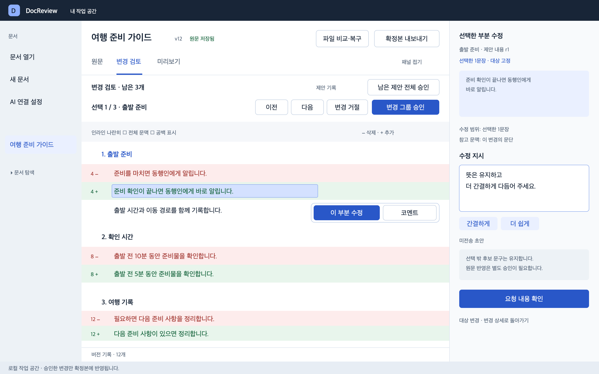
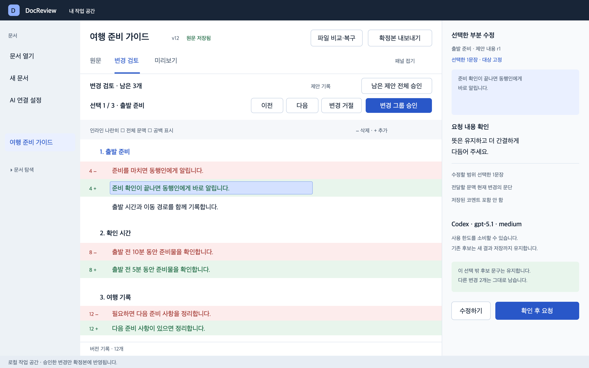
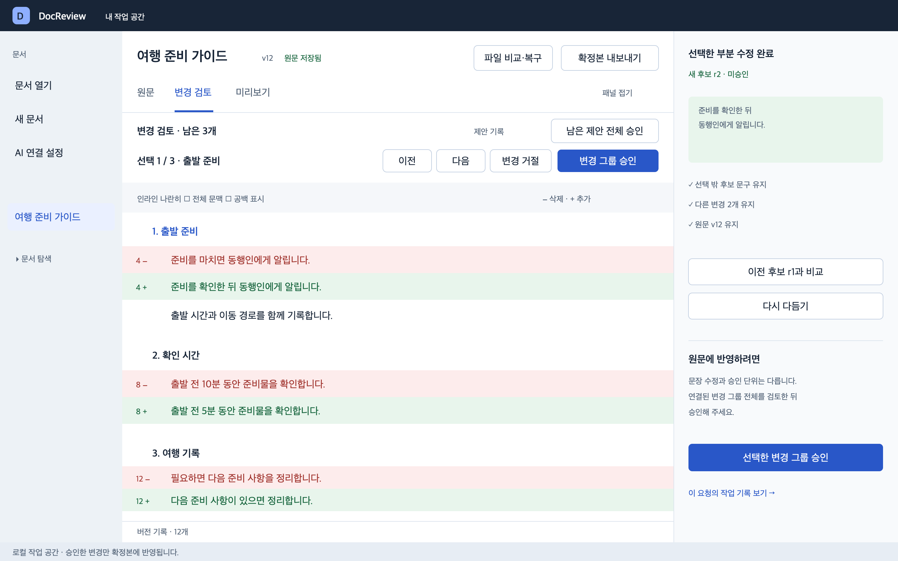
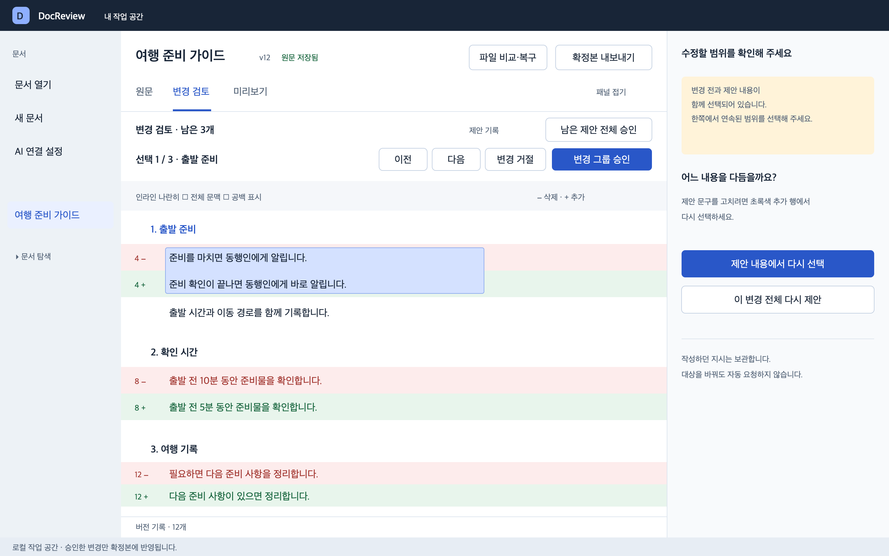
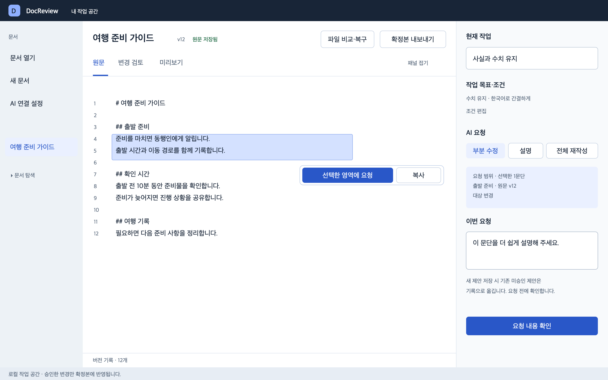
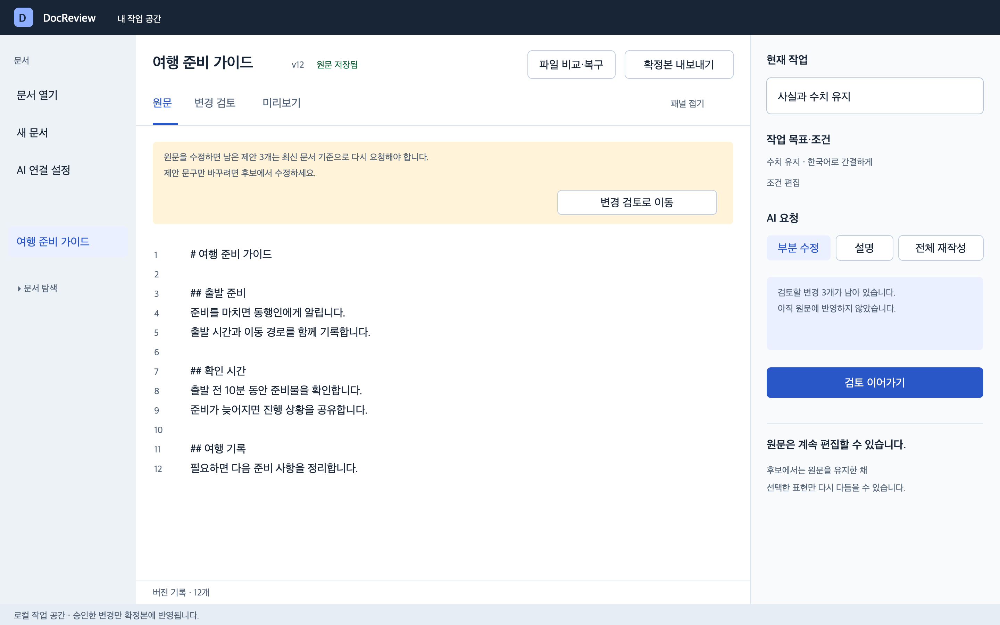
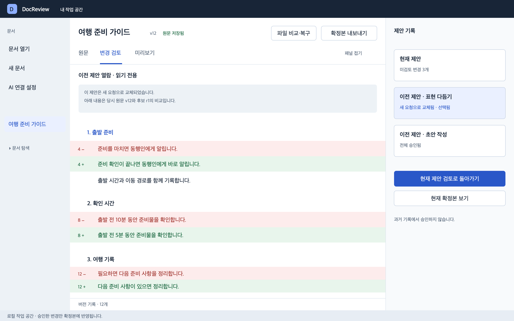
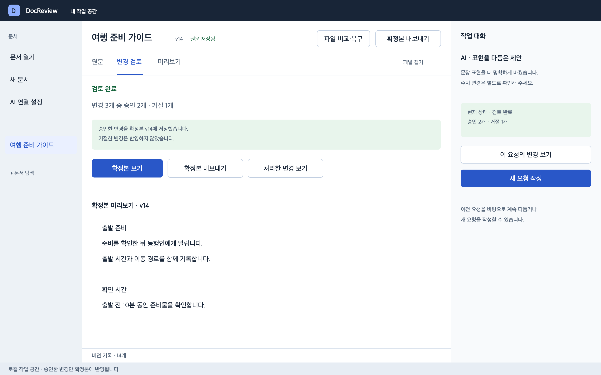
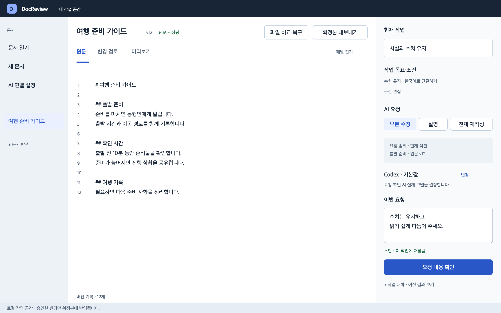

읽던 문장에서 바로 수정 요청


현재는 변경 상세의 코멘트·재제안 진입을 찾아야 합니다. 개선안은 선택 주변의 ‘이 부분 수정’에서 오른쪽 요청 폼으로 바로 연결하고, 인용과 본문 강조를 유지합니다.



‘한 문장만 수정’과 ‘한 문장만 외부 전송’은 다릅니다. 확인 단계에서 대상·전달 문맥·코멘트·실제 모델을 보여주고, 사용자가 최종 요청합니다.



새 후보가 도착하면 기존 검토 위치를 유지합니다. 선택 밖 문구·다른 제안·원문 보존을 확인하고, 이전 후보 비교 또는 별도 승인을 선택합니다.



단일 수정 대상으로 해석할 수 없는 선택을 제안 전체로 바꾸지 않습니다. 이유를 설명하고 제안 쪽에서 다시 선택하거나 변경 전체 재제안을 명시적으로 선택하게 합니다.



최초 설계는 고정 버튼에서 일반 요청 범위로 연결했습니다. 이후 보완 설계는 선택 옆 팝오버 → 원문 부분 수정으로 연결하고 기존 미승인 제안을 보존합니다. 아래 최초 화면은 설계 이력으로 보관합니다.



원문 편집으로 남은 제안이 재검토 상태로 바뀌는 규칙은 유지합니다. 반복 확인창 대신 본문 위에 영향 개수와 후보 수정 경로를 표시합니다.



현재의 좁은 패널에 전문을 쌓는 대신, 오른쪽은 목록과 실제 상태를 표시하고 중앙에서 당시 원문과 후보를 읽기 전용으로 비교합니다.



모든 결정을 마친 상태에서는 ‘남은 0개’ 대신 완료 내역과 저장된 확정본을 보여줍니다. 대화의 응답에서도 해당 요청의 변경과 현재 처리 상태로 이동합니다.



부분 수정·설명·전체 재작성의 진입을 통합하고, 현재 모델 설정과 초안 저장 상태를 짧게 보여줍니다. 전체 재작성 선택 시 범위와 적용 방식을 별도로 안내합니다.
